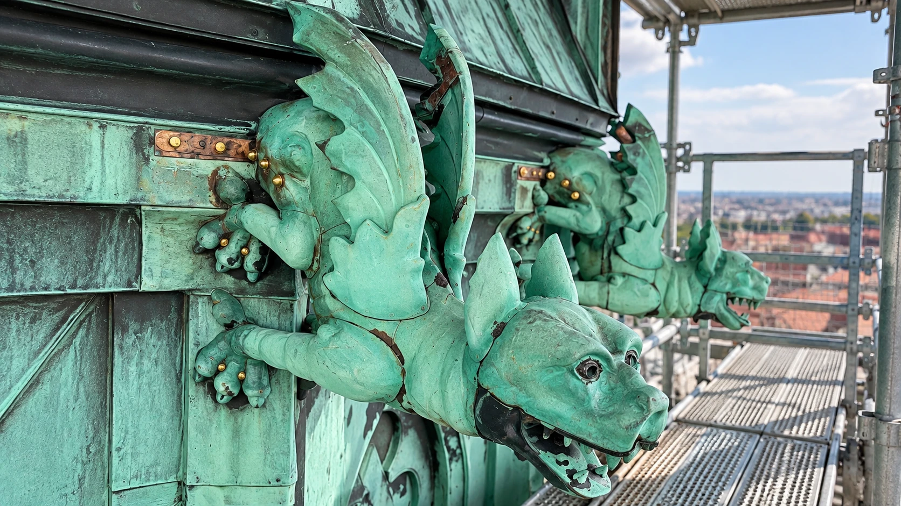

Restaurering
VÅRT HANTVERK
Varsam restaurering av äldre byggnader med respekt för originalmaterial och hantverk.
Restaurering kräver förståelse för byggnadens historia och de ursprungliga materialen. Vi återskapar och bevarar plåtdetaljer med traditionella metoder, där målet är att förena lång livslängd med byggnadens kulturhistoriska värde.
Prata med oss →Varsam restaurering av äldre byggnader med respekt för originalmaterial och hantverk.
Restaurering kräver förståelse för byggnadens historia och de ursprungliga materialen. Vi återskapar och bevarar plåtdetaljer med traditionella metoder, där målet är att förena lång livslängd med byggnadens kulturhistoriska värde.
Projekt och referenser publiceras här.